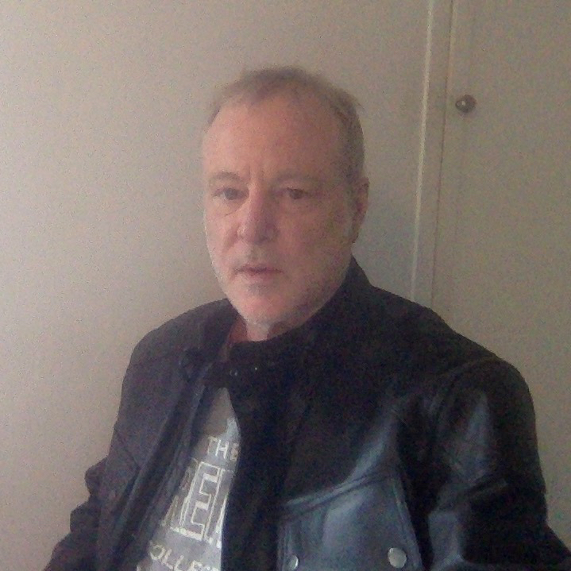

About Us
About Us

Ian Beardsley studied physics at The University of Oregon and worked in astronomy For four years at the state observatory, Pine Mountain Observatory in the high desert East of Bend, Oregon. His name appears on several papers in the Astrophysical Journal.
The Next Phase of the Project by Ian Beardsley
Creation: Artificial And Biological by Ian Beardsley on Scribd
Life and Artificial Intelli... by Ian Beardsley
Sabertooth Tigers, Vortices... by Ian Beardsley
Life A Mathematical Construct by Ian Beardsley
The Planets and Damped Harm... by Ian Beardsley
Perfect Equations by Ian Beardsley
The Mathematical Nature of ... by Ian Beardsley
Weird Arithmetic and Weird ... by Ian Beardsley